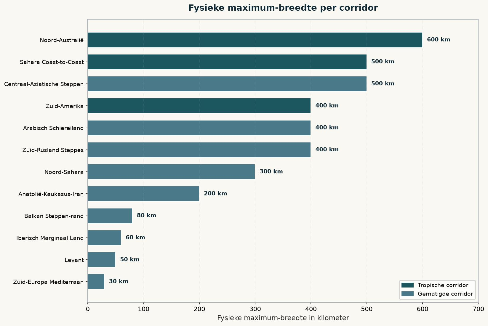
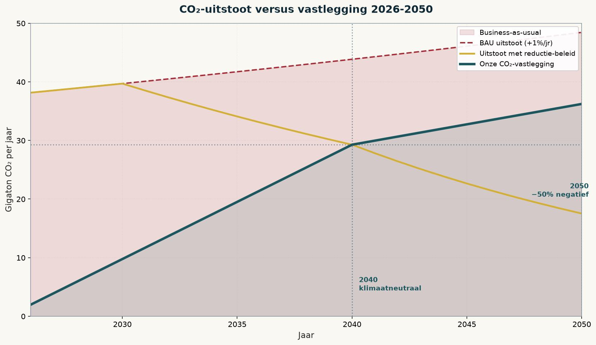
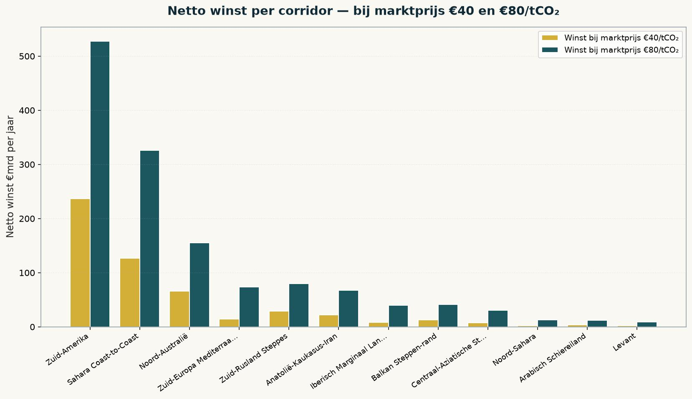

Der Welt-Gürtel — Klimaplan 2040-2050
840.000 EU-Arbeitsplätze und eine Zukunftsperspektive in Afrika
Jacobus van Merksteijn
The climate problem no longer needs an ideological solution. It needs a differentiated construction plan, built out of hectares, tons of CO₂ and euros per ton. This newspaper did that calculation for 425 corridor segments of 100 km around the Sahara, along the Andes, across North Australia, through Anatolia and along the Russian and Kazakh steppes. What emerges is a strategy that breaks three taboos at once: it declares which areas are unprofitable and thus must be skipped, it requires no sacrifice but offers 840,000 new jobs in Europe, and it gives asylum seekers a concrete future prospect in Africa that our own democracy cannot provide.
The question is not "can we do it" but "where and how wide"
Fifteen years of climate debate has kept the discussion on the same question — how much must we reduce, how fast, and who pays the costs. The reverse question is rarely raised: how much CO₂ can the earth reabsorb with existing industrial means, and what does that cost per ton? This newspaper did that calculation for 425 concrete places, each 100 km long, in sections of 100 km wide. Each segment was calculated on temperature, rainfall, dew, field size and machine deployment.
The outcome is confrontingly simple. Of 425 zones, only 290 turn out truly profitable at a market price of €40 per ton CO₂. The rest — 135 zones — have a cost price above €40. These get a red cross on the map. They are all in areas too dry or too fragmented: the Egyptian interior, the Levant, parts of the Arabian Peninsula, and the most fragmented parts of southern Europe.
Widening profitable zones delivers more climate impact per euro invested than expanding into unprofitable zones. That seems obvious. Yet no climate organization has ever formulated it this way.

The answer is differentiated — 30 km here, 600 km there
Climate plans like to speak with a single number. This study cannot. The physical maximum width per corridor varies by factor twenty: from 30 km in southern Europe (fragmented by villages, olive groves, vineyards and sea) to 600 km in Australia's Top End (empty to the horizon, with Aboriginal cooperation). Each corridor receives exactly as much width as its geography allows.
| Corridor | Max width | Max CO₂ Gt/yr | Cost price | Limiting factor |
|---|---|---|---|---|
| Nord-Australien | 600 km | 13.4 | €10.53 | |
| Sahara Coast-to-Coast | 500 km | 24.9 | €14.49 | |
| Süd-Amerika Anden-Amazon | 400 km | 29.1 | €7.50 | |
| Süd-Russland Steppen | 400 km | 5.1 | €17.68 | |
| Zentralasiatische Steppen | 500 km | 2.8 | €26.44 | |
| Anatolien-Kaukasus-Iran | 200 km | 2.3 | €20.74 | |
| Arabische Halbinsel | 400 km | 0.8 | €23.24 | |
| Nord-Sahara (Marokko-Ägypten) | 300 km | 0.8 | €32.62 | |
| Balkan Steppen-Rand | 80 km | 0.6 | €22.06 | |
| Iberisches Randland | 60 km | 0.5 | €29.83 | |
| Levant | 50 km | 0.09 | €28.59 | |
| Süd-Europa Mediterran | 30 km | 0.4 | €30.61 | |
| TOTAL | varies | 80.8 | weighted €14.91 | — |
The average cost price across all 290 profitable zones at base width 100 km is €14.91 per ton CO₂. South America comes out best at €7.50; southern Europe worst at €30.61. That is not a political choice but physics: photosynthesis efficiency is temperature × light × water. In the tropics all three are present year-round, in Europe only 5 to 7 months.
The targets 2040 and 2050 — with market prices no one has to talk away
If worldwide CO₂ emissions under realistic reduction policy fall from 37.4 Gt in 2024 to 29.3 Gt in 2040 and 17.5 Gt in 2050, then our sequestration in 2040 must at least compensate that 29.3 Gt to be climate-neutral. For 2050 at least 25% negative, 26.9 Gt per year must be removed; for 50% negative 36.2 Gt per year.

The market price for CO₂ removal stands today between €40 and €80 per ton. This market price is maintained in the plan — no price pressure, no dumping. At a market price of €40 the net margin over the 290 zones is €25.09 per ton; at €80 that becomes €65.09 per ton. What remains as profit is substantial but not ecstatic: €529 billion per year at €40, €1,373 billion at €80. Sufficient to build all machines, lay all infrastructure and give Africa a structural economy — and give the host countries their rightful share in the worldwide climate operation.

| Market price | Margin/ton | Profit at base 100 km | Profit at physical max |
|---|---|---|---|
| €40/tCO₂ | €25.09 | €529 Mrd./Jahr | €2,027 Mrd./Jahr |
| €60/tCO₂ | €45.09 | €951 Mrd./Jahr | €3,643 Mrd./Jahr |
| €80/tCO₂ | €65.09 | €1,373 Mrd./Jahr | €5,259 Mrd./Jahr |
How wide should each area become?
The optimal rollout follows the return per step. Every 100 km of widening is ranked on profit per hectare — and the most profitable comes first. The answer is not "175 km everywhere". It is: South America first to a full 400 km, then North Australia to 400 km, then Sahara Coast-to-Coast to 500 km. Southern Europe gets only its physical 30 km — or zero, if not needed.

2040 rollout: South America Andes-Amazon at full 400 km (29.1 Gt/year, €527 billion profit @€80); North Australia at 100 km (2.2 Gt/year, €155 billion profit); Sahara Coast-to-Coast in pilot phase 15 km for infrastructure and Great Green Wall coordination. All other corridors: not yet active.
2050 rollout (−50% negative): South America at full 400 km; North Australia expanded to 400 km (8.9 Gt/year); Sahara still as reserve. All European corridors: still 0 km. Unnecessary for these targets.
840,000 new jobs in Europe — this is not an austerity story
What's striking about this climate plan is that it is not an austerity story and asks no sacrifice from the European citizen. It is an industrial expansion on a scale Europe has not seen since post-war reconstruction. The machines — 6 meters wide, 1000 meters per hour, 300 liters of fuel per hour, with AI condition monitoring and satellite verification — are built in Germany, the Netherlands, Italy and France. The electronics and AI modules come from Swiss and Swedish suppliers. The components come from tens of thousands of European SMEs.
About 98,000 machines needed worldwide at physical maximum, with a five-year replacement cycle — meaning 20,000 machines per year in continuous production. Each machine costs approximately €875,000 in CAPEX plus €25,000 in AI modules. About 40% of that goes to labour hours: design, assembly, electronics, test, service. At an average European labour cost of €70,000 per FTE per year that delivers 840,000 new jobs.

These 840,000 jobs are structural, not cyclical. They exist as long as the climate programme exists — at least 30 years. They are regionally spread across all EU member states with industrial capacity. And they require no retraining of people who today already work in the automotive, steel or manufacturing industry.
Asylum seekers as partners — a future prospect our democracy cannot offer
The biggest political truth this climate plan exposes is one that Europe prefers not to say out loud: our "democracy" offers hundreds of thousands of asylum seekers no future prospect. They arrive in tents and containers, wait years for procedures, are not allowed to work, and once they receive status, the first generation is powerless in the labour market and the second alienated from both cultures. This is not a failure of intentions — this is a structural failure of European society as it functions today.
The World-Belt offers something essentially different. In Mauritania, Mali, Niger, Chad, Sudan, Ethiopia, Colombia, Peru and Bolivia, hundreds of thousands of jobs will emerge over the next 25 years — machinists, technicians, satellite analysts, verifiers, coordinators, plant biologists, water managers. The jobs are new, high-value, ecologically meaningful and paid at world-market level with a decent uplift above local wages. They are exactly what the first-generation migrant seeks and rarely finds in Europe: work with meaning, in their own region, in their own language, with prospect of a career and a family.
Those with a good job in Mauritania at the climate programme don't need to go to Germany. Those learning a technical profession in Mali with a career path don't need a Berlin container. Those working in Colombia at the CO₂ programme don't need Madrid.
This is not an anti-migration argument. It is a pro-future argument. For people today stuck as asylum seekers in Europe — often forced by circumstances they did not choose — the World-Belt offers what our labour market and bureaucracy structurally refuse them: a future. Return then becomes no deportation, but an appointment. Those today in Ter Apel or Nauen can tomorrow be technical specialists in Nouakchott or Djibouti at a European-led programme.
What one hundred thousand European social workers and interpreters cannot achieve, the climate programme achieves by itself. Not by "sending people back", but by giving them a reason to want to return: a job, a career, a family, a country with a future again.
What remains — 135 red crosses on the map
The 135 zones that remain unprofitable even at €80 per ton also deserve explicit mention. They are concentrated in the driest, most fragmented areas: Egyptian interior, Syrian and Iraqi highlands, Yemeni mountains, Rub-al-Khali. Physically simply too dry. Politically too unstable. Landscape too fragmented. On the world map at the top of this article, these are the red crosses. They are skipped. Period.
Also Levant, Southern-Europe Mediterranean, Iberian Marginal Land and Balkan Steppe-edge are technically possible but economically marginal and climate-politically barely necessary. For 2040-neutral and 2050 −50% they are not needed. They are only an option if setbacks in the main corridors accumulate.
What this is, and what it is not
This is not a utopia and not a techno-fix. It is a differentiated, calculated investment proposal for a concrete climate operation on 290 profitable zones. It is technically feasible with existing technology — Juncao and Moringa already grow in the target areas today, the machines are a scale-up of existing agricultural technology, satellite verification has existed for ten years. It is economically profitable at a market price already reached today in the EU ETS.
It is politically difficult because it breaks three taboos at once. It says parts of the climate effort in Europe (Southern-Europe Mediterranean, Iberian, Balkan) are pointless and must be skipped. It positions climate policy as a growth industry instead of a loss industry. And it sketches a return perspective for migrants that explicitly acknowledges our democracy structurally offers them no future.
This newspaper thinks it is time for those three taboos. The calculation stands. The machines can be built. The countries want to. What remains is the political courage to choose differentiation over consensus, industry over austerity, and honesty about migration over self-deception.